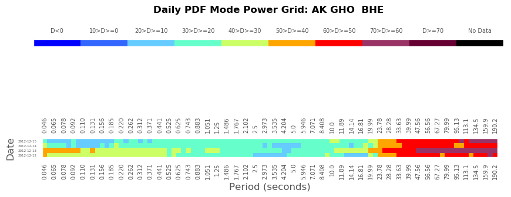
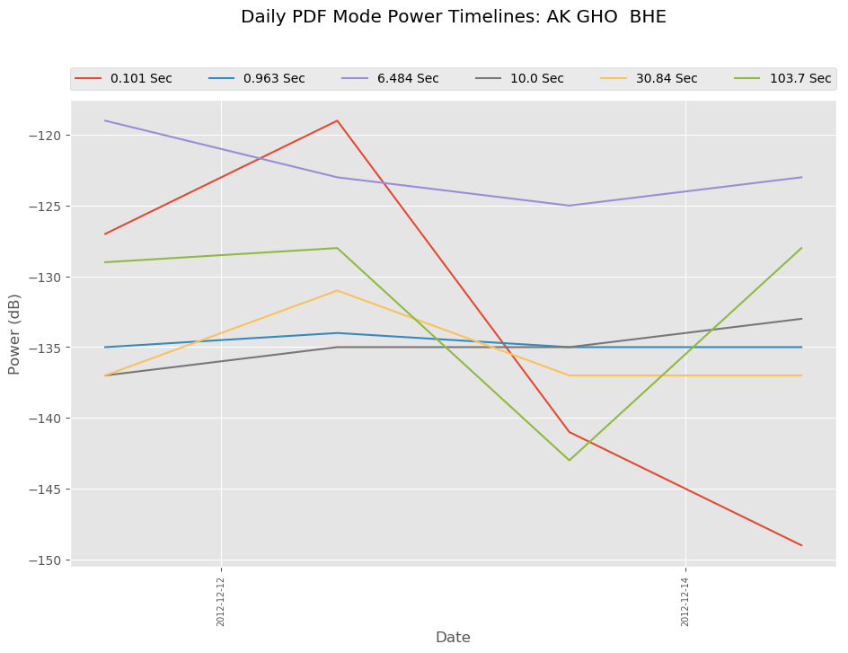

pycheron.plotting.dailyPdfPlot¶
-
dailyPdfplots(st, model='nlnm', f_name_grid=None, f_name_line=None, per_arr=None, net_dict=None, diff_threshold=50, micro_threshold=10, banded_threshold=5, station=None, network=None, channel=None, session=None, location=None, database=None, logger=None)[source]¶ Plots a color grid of the daily PDF Mode differences from noise model (nlnm or gsn)
Parameters: - st (obspy.core.stream.Stream or pycheron.db.sqllite_db.Database) – Obspy stream object or Database Object
- model (str) – Noise Model to use in differencing from the PDF mode. Options are “gsn”, “nlnm”, or “network”. Using “network” calls networkNoiseModel.py and creates one on the fly or uses input dictionary from the output of a pre-existing network noise model.
- f_name_grid (str) – output file name for png colorgrid plot
- f_name_line (str) – output file name for png pdf mode timeline plots
- per_arr (numpy.ndarray) – Period array to use with the models
- net_dict (dict) – Network noise model formatted in same way as output from networkNoiseModel.py
- diff_threshold (int) – threshold to use to trigger frequency masks.
- micro_threshold (int) – Threshold to use to trigger masks when microseism isn’t recording healthy energy.
- banded_threshold (int) – threshold to use to trigger masks when banded character in colorgrid present.
- network (str) – If using database, must supply the network
- station (str) – If using database, must supply the station
- channel (str) – If using database, and want to plot specific channels, if None, all channels associated with network, station, and session will be plotted
- session (str) – specific session in database
- database (pycheron.db.sqllite_db.Database) – Database object to insert result. If :param st is a Database object, this is not needed. However if it is a Obspy Stream and you would like to save to the DB or read existing data set this parameter to a database object (Default = None)
- logger (pycheron.util.logger.Logger) – Logger object
Returns: list of dictionaries with the following keys and types:
- start_time (str): start time of the trace object. Applies to all masks noted below.
- end_time (str): end time of the trace object. Applies to all masks noted below.
- snclq (str): station network channel location quality indicator for the obspy object (e.g., UU.MSU..EHZ)
- noise_masks (dictionary): dictionary containing the following information:
- frequency_start (list): list of beginning frequency value band where issue(s) start
- frequency_end (list): list of ending frequency value band where issue(s) end
- microseism_masks (boolean): boolean indicating whether the microseism had healthy energy or not
- banded_masks (boolean): boolean indicated whether banded issue was present, True indicates likely unhealthy station
Return type: list
Parameter Notes
- diff_threshold (int):
- Threshold to use to trigger frequency masks. This is the difference from the nlnm, gsn, or network noise models desired to trigger a mask. DEFAULT = 50 and is probably sufficient for most cases as this will be the red color and above within the color grid plots. This is used as a greater than or equal to threshold.
- micro_threshold (int):
- Threshold to use to trigger masks when microseism isn’t recording healthy energy. This threshold is based on difference from nlnm, gsn, or network noise models desired to trigger a mask. DEFAULT = 10, so the two darkest blues on the colorgrid plots. This will be utilized as a less than or equal to threshold.
- banded_threshold (int):
- threshold to use to trigger masks when banded character in colorgrid present. This often indicates an issue with the station, often unhealthy behavior, whether a dead channel, noise issues, or other equipment issues. This trigger is to let the user know there’s an issue with the health of the station. This threshold is based on the average difference across each element in the array (or rows of the dataFrame) Lower numbers indicate there isn’t much difference between the elements, which suggests an unhealthy station, while larger numbers suggest a healthier change as would be expected in a properly functioning station. DEFAULT = 5, and is probably a good threshold for the majority of cases.
Example
 # Import libs from obspy.clients.fdsn import Client from pycheron.plotting.dailyPdfPlot import dailyPdfplots from obspy import UTCDateTime client = Client("IRIS") # Define start/end time and then get stream object starttime = UTCDateTime("2012-12-12T00:00:00.000") endtime = UTCDateTime("2012-12-16T00:00:00.000") st = client.get_waveforms("AK","GHO","","BHE",starttime, endtime) dailyPdfplots(st, model="gsn")